이천 1:1 보컬 레슨 · 모르면 물어보세요
처음엔 어땠고,
지금은 어떤가요?
네이버 방문자 리뷰
원문 보기 ↗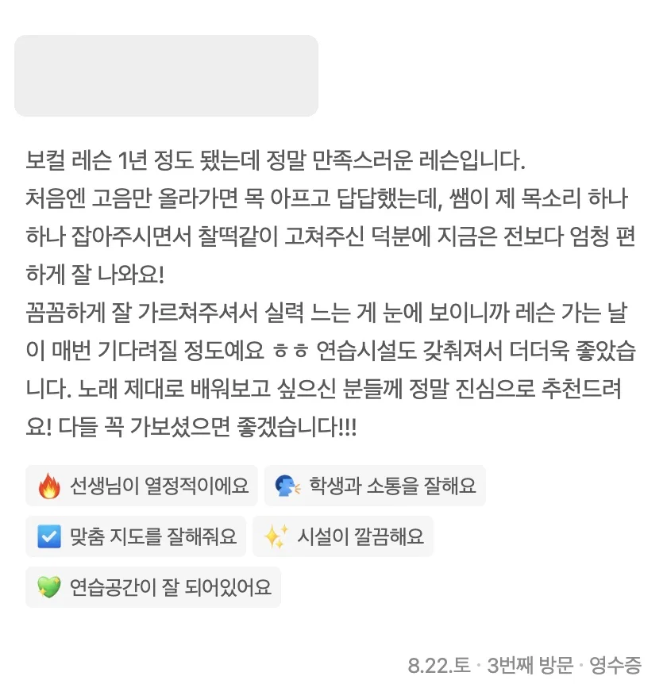
리뷰 더 보기 ↓다녀 본 분들의 이야기
네이버 방문자 리뷰 화면이에요.
이름과 프로필만 가렸어요.
- 선생님이 열정적이에요
- 학생과 소통을 잘해요
- 맞춤 지도를 잘해줘요
- 선생님 실력이 좋아요
- 수업이 체계적이에요
오래 다닌 분
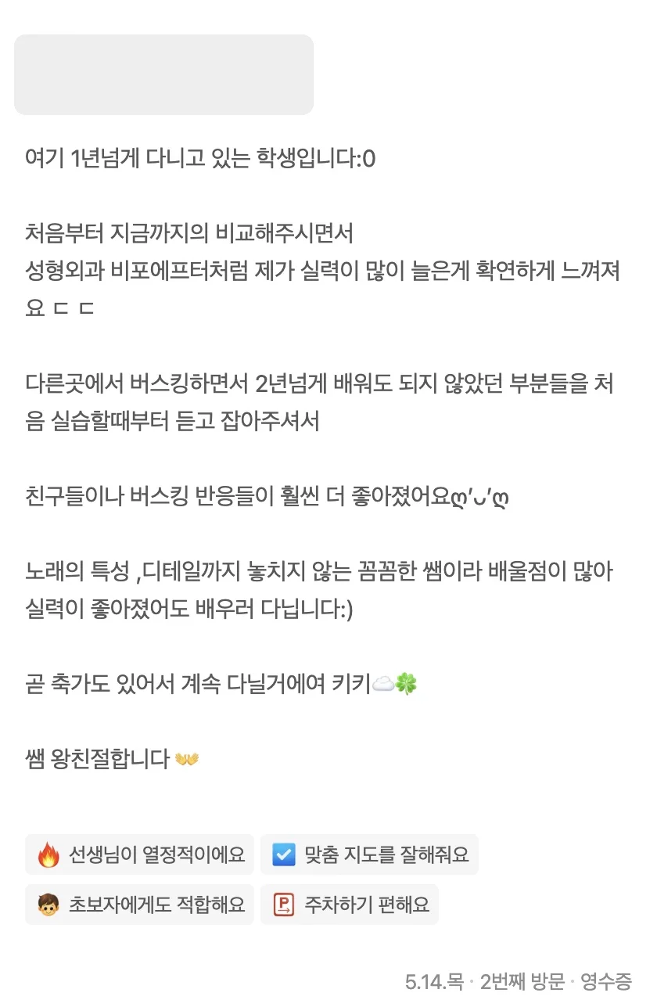
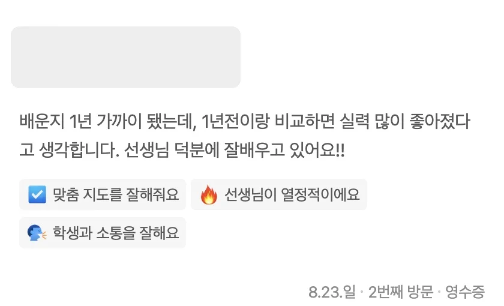
체험해 본 분
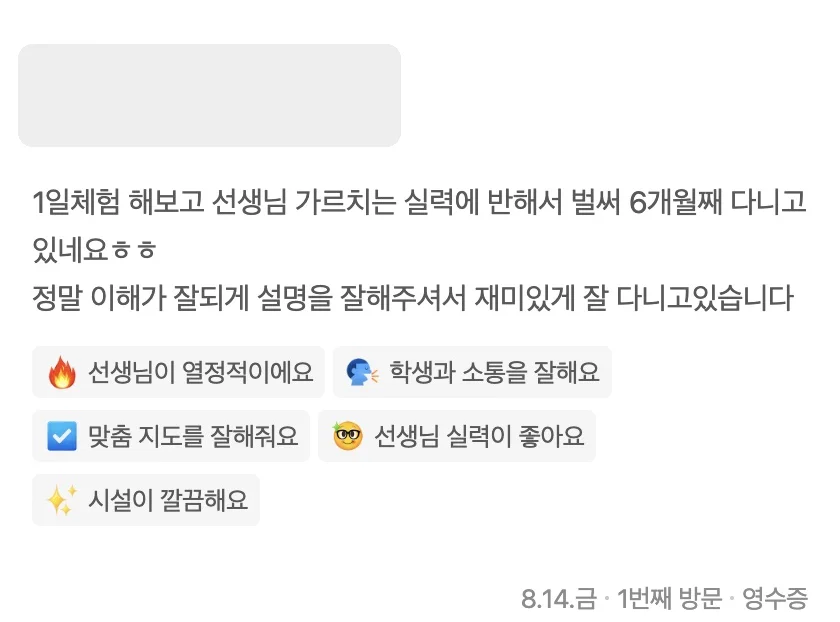
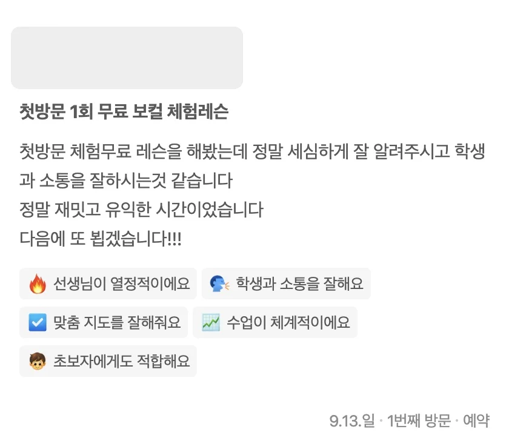
축가·목 고민으로 온 분
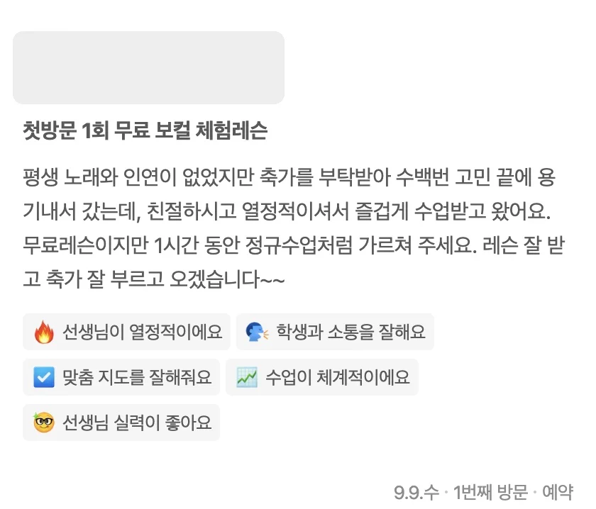
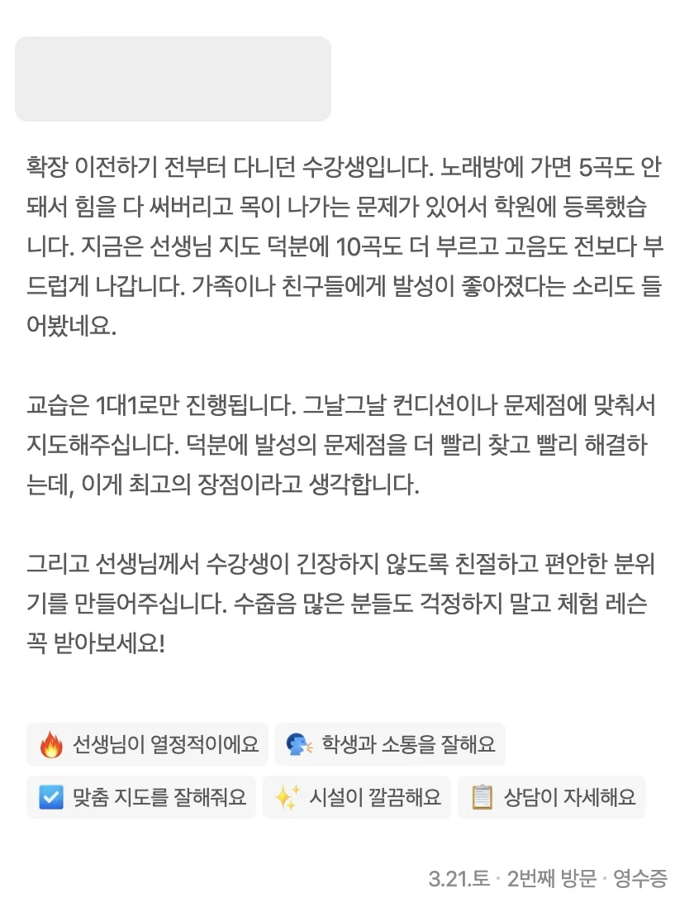
매달, 꾸준히
목소리 한 사람 분량으로
설계합니다
따라 하라는 말 대신,
소리가 왜 그렇게 나는지부터 짚어요.
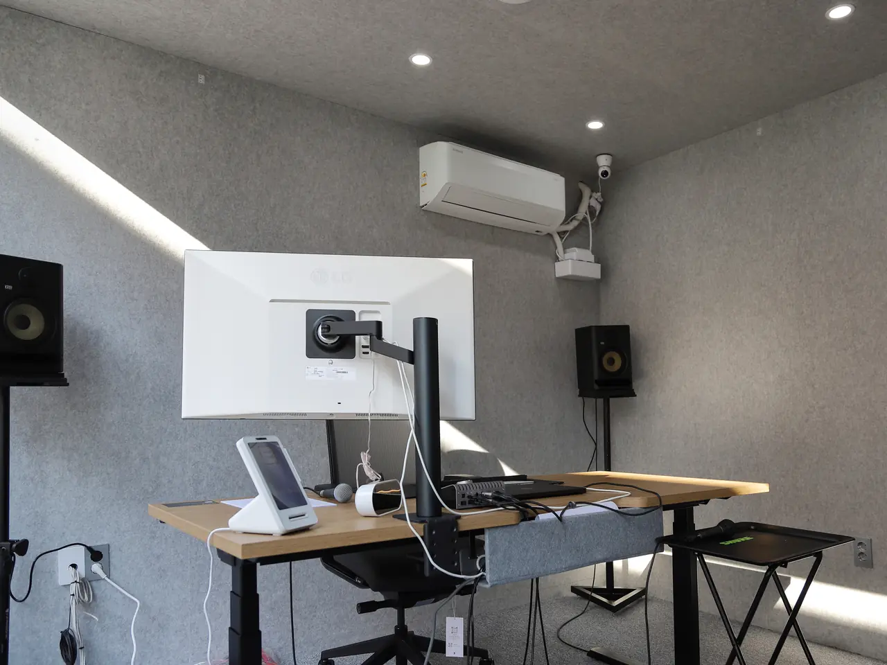
레슨실에서 녹음하고,
바로 들어 봅니다
시범은 SM7dB, 학생은 BETA58A로 녹음하고
KRK 모니터 스피커로 바로 들려 드려요.
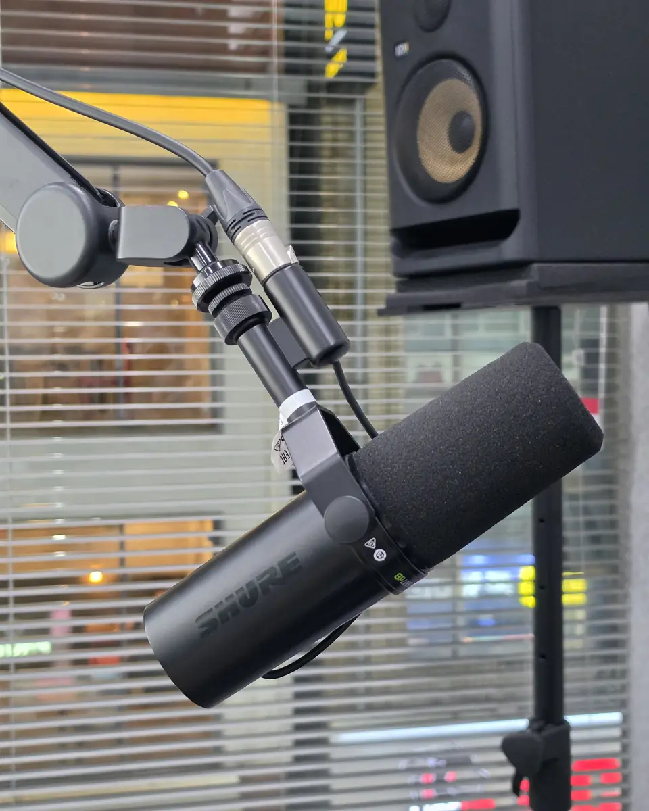
레슨이 없는 날에도
연습하러 오세요
연습실에서 녹음해 보내 주시면,
그 녹음에도 피드백을 드려요.
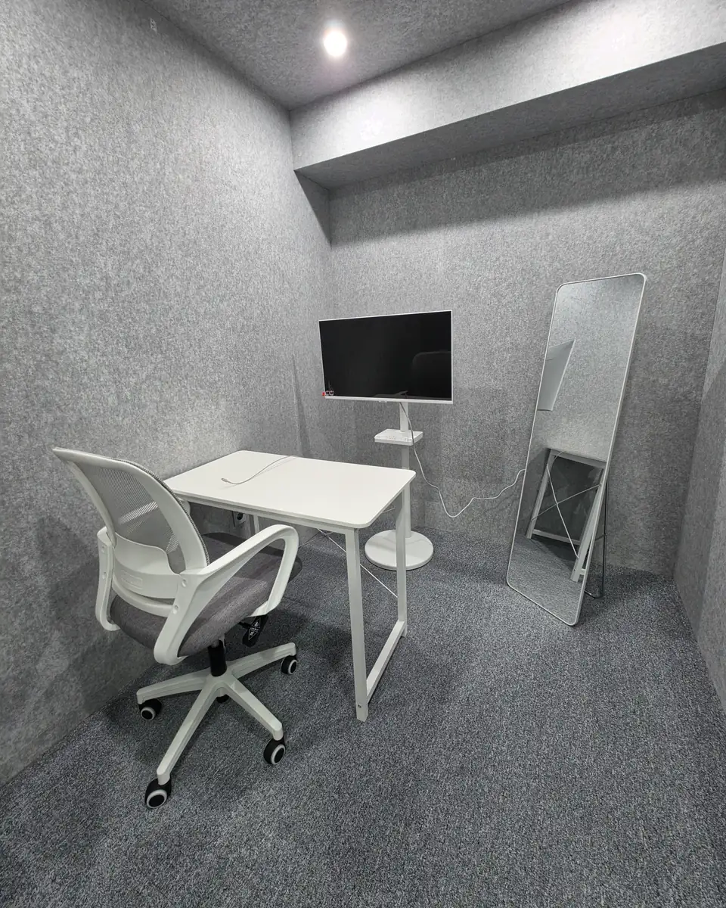
수업은 이렇게 이어집니다
-
01
상담
원하는 곡과 지금 고민부터 들어요.
-
02
목소리 진단
음역대와 발성 습관을 확인해요.
-
03
맞춤 커리큘럼
기본기와 곡 연습 순서를 지금 속도에 맞춰요.
-
04
주간 피드백
다음 수업까지 연습할 포인트를 남겨 드려요.
처음 오시기 전,
이런 점이 궁금하셨나요?
보컬을 처음 배워도 괜찮나요?
네, 지금 목소리와 노래하는 습관을 확인하는 것부터 시작해요. 기초가 필요하면 호흡과 발성부터, 이미 익숙한 부분이 있으면 다음 단계부터 함께 잡아갑니다. 잘해야 시작할 수 있는 수업은 아니에요.
소리를 따라 하기가 어려운데, 어떻게 배우나요?
같은 설명도 사람마다 다르게 느낄 수 있어요. 먼저 어디에서 힘이 들어가고 소리가 막히는지 확인하고, 몸을 쓰는 방법부터 익혀요. 그 감각을 발음과 노래로 연결한 뒤 녹음으로 달라진 소리를 함께 들어봅니다.
레슨 후 혼자 연습할 때는 어떻게 하나요?
수업 전후의 녹음을 비교하고, 혼자서도 반복할 수 있도록 연습할 순서와 포인트를 정리해 드려요. 연습하다 헷갈리는 부분은 24시간 언제든 녹음이나 영상으로 보내주세요. 레슨이 없거나 시간이 날 때 확인하고 피드백을 드립니다. 자세한 이용 방법은 체험레슨에서 안내해 드려요.
교대 근무로 매주 일정이 달라도 괜찮나요?
매주 같은 시간에 오는 고정 일정과, 가능한 시간을 다시 맞추는 유동 일정이 있어요. 유동 일정은 남아 있는 시간 안에서 조율하므로 원하는 시간이 항상 비어 있지는 않을 수 있어요. 생활 패턴에 맞는 방식부터 함께 정해요.
등록하기 전에 체험해 볼 수 있나요?
네, 첫 방문 무료 체험레슨을 예약하실 수 있어요. 체험은 50분이며, 현재 목소리와 고민을 살펴보고 무엇을 개선할지 함께 이야기해요. 녹음으로 변화를 확인하고 다음 연습 방향도 안내해 드립니다. 직접 수업을 경험한 뒤 결정하셔도 괜찮아요.
체험레슨에 무엇을 준비하면 되나요?
편한 차림으로 오시고, 불러보고 싶은 곡이 있다면 알려주세요. 녹음 장비는 준비되어 있어요. 방문 전 예약으로 가능한 시간을 먼저 확인해 주세요.
레슨이 없는 날에도 연습할 수 있나요?
등록 수강생은 레슨이 없는 날에도 언제든 연습실을 이용하실 수 있어요. 집에서 소리 내기 어렵다면 수업에서 정리한 연습을 이어가는 데 활용해 보세요.
위치와 주차는 어떻게 되나요?
이천시 어재연로 37, 3층에 있어요. 주차는 창전동 임시공영주차장을 이용하시면 되고, 레슨 시 주차권 발급이 가능합니다. 방문 전 네이버플레이스에서 길찾기와 당일 운영 안내를 확인해 주세요.
오시는 길
경기도 이천시 어재연로 37, 3층
주차는 창전동 임시공영주차장
(이천종합버스터미널 근처) ·
레슨 시 주차권 발급 가능합니다
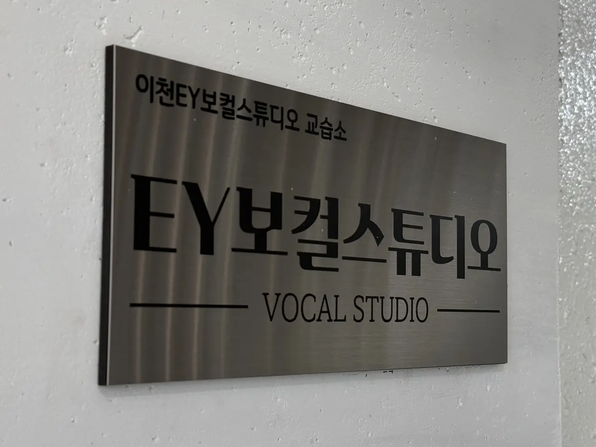
체험 레슨으로
먼저 만나 보세요
첫 방문 체험은 무료, 50분이에요.
0507-1377-4624 ·
매일 12:00–22:00 · 설날·추석 연휴 휴무
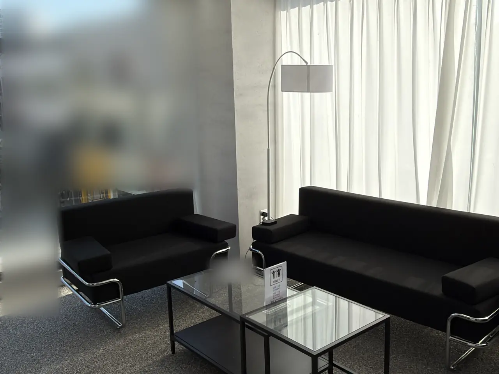